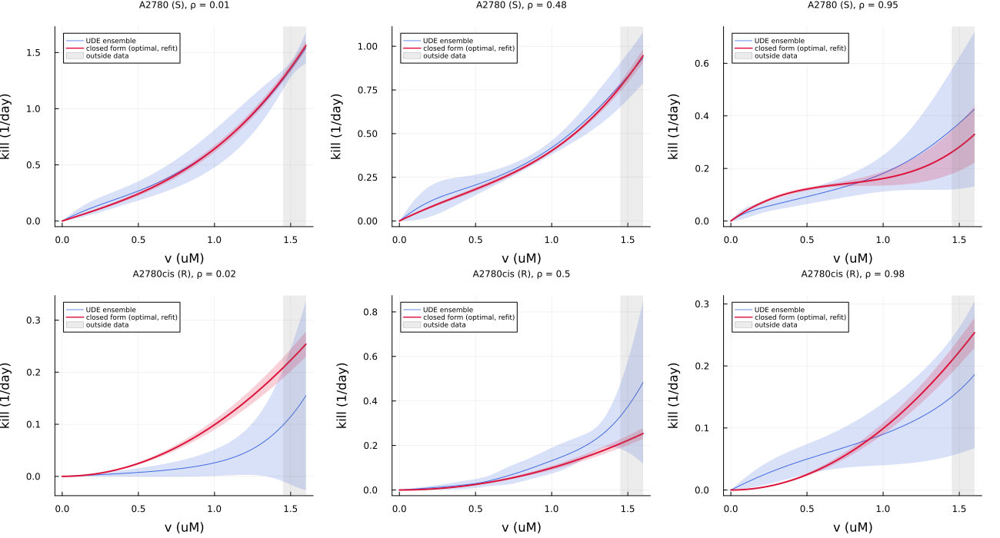

v = filtered exposure (uM), dv/dt = γ(u − v); ρ = relative density; H(v; c, n) = vⁿ/(cⁿ + vⁿ). The NN kill term was sampled from the mean of the 5 UDE seeds. Every combination of the best 1–3-term A2780 form and 0–3-term A2780cis form was refit as an ODE on the data and ranked by BIC. The optimal form is the one with the fewest free parameters among candidates within 3 BIC of the lowest (a lower BIC breaks ties). Its coefficients carry Bayesian-bootstrap 5–95% intervals; terms whose interval includes 0 are flagged, not removed. Runtime: 40.2 min.
How to read this table
line
term
estimate
lo
hi
includes_zero
S
v²
0.6105
0.5962
0.6201
false
S
v³·ρ
-0.4891
-0.4922
-0.4286
false
R
v·ρ
0.7057
0.407
2.953
false
R
H(v; 0.8, 2)
-0.5011
-1.834
-0.1739
false
Candidate ranking (BIC on training drug units; lower is better)
How to read this table
kill_S
kill_R
kill_params
bic_drug
delta_bic
chosen
0.378·v³ + 0.427·v·ρ + -0.56·v³·ρ
0.199·v·ρ + -0.0409·H(v; 0.8, 2)
5
917.3
0
0.478·v² + -0.284·v³·ρ
0.199·v·ρ + -0.0409·H(v; 0.8, 2)
4
920
2.622
chosen
0.378·v³ + 0.427·v·ρ + -0.56·v³·ρ
-0.0656·v + 0.0383·v² + 0.198·v·ρ
6
925.3
7.916
0.478·v² + -0.284·v³·ρ
-0.0656·v + 0.0383·v² + 0.198·v·ρ
5
928.4
11.01
0.378·v³ + 0.427·v·ρ + -0.56·v³·ρ
0.163·v·ρ
4
942.1
24.74
0.478·v² + -0.284·v³·ρ
0.163·v·ρ
3
943.8
26.48
0.378·v³ + 0.427·v·ρ + -0.56·v³·ρ
0
3
961.8
44.48
0.478·v² + -0.284·v³·ρ
0
2
964.2
46.83
0.312·v²
0.199·v·ρ + -0.0409·H(v; 0.8, 2)
3
972.1
54.73
0.312·v²
-0.0656·v + 0.0383·v² + 0.198·v·ρ
4
980.2
62.87
0.312·v²
0.163·v·ρ
2
993.9
76.53
0.312·v²
0
1
1014
97.06
Forward RMSE against the NN and Hill (log scale)
How to read this table
model
train: drug units
train: untreated co-culture
VALIDATION: ce1 treated co-culture
closed form (optimal)
0.2947
0.5701
0.3944
UDE (NN kill)
0.2924
0.5642
0.3897
UDE (NN kill + NN resource)
0.2915
0.5617
0.3939
pure neural ODE
0.2635
0.4116
0.568
no drug
0.6074
0.5982
0.7642
Hill (mechanistic)
0.3036
0.5635
0.4512
BIC against the other models
How to read this table
model
kill_params
bic_drug
closed form (optimal)
4
920
Hill (mechanistic)
5
989.9
pure neural ODE
129
1524
UDE (NN kill)
113
1536
UDE (NN kill + NN resource)
226
2203
no drug
0
4485
Closed form against the NN

Kill rate vs exposure at low/mid/high density; bands = sd over seeds (UDE) or bootstrap members (closed form); shaded = exposures never reached in the data
Sparse regression detail
Best RMSE per number of terms
A2780 (S)
Sampled region: v ∈ [0, 1.46] uM, ρ ∈ [0.01, 0.93]. Ensemble spread (mean sd of NN kill): 0.023 /day.